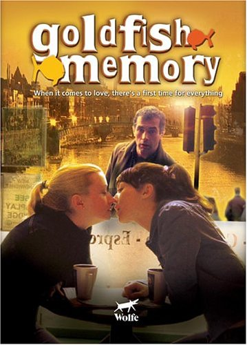
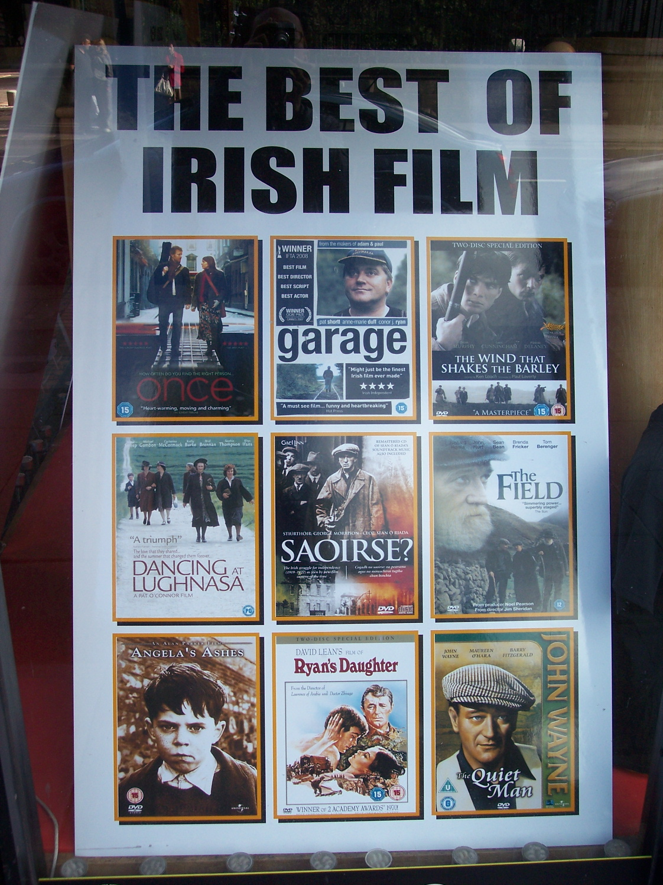

POSTS
아일랜드를 배경으로 한 영화
<Goldfish Memory 2005>

로맨틱 코메디.
더블린 주변 장면을 정말 잘 잡은 영화다.
Once에 비하면 메이저급 영화라 할 수 있으며 각종 세대, 출신들의 다양한 억양의 아이리시 액센트를 접할 수 있다.
대사도 무지 많아서 영어공부용으로 강추한다.
<Once>

로맨틱 뮤지컬의 일종
정작 아일랜드에서는 그닥 유명하지 않은 영화.
남자 주인공은 아일랜드에서 유명한 가수라 한다.
더블린 주변의 경관을 볼 수 있지만 저예산 영화라 테크닉적으로 뛰어나다고 볼수는 없다.
대사가 별로 없어 영어공부에도 그닥 도움이 되지 않는다.
<Adam & Paul 2004>

역시 저예산 영화.
더블린의 진짜 ‘주변’을 솔직,처절하게 담아냈다.
정통 아이리시 억양을 접할 수 있다.
뒷골목 범죄물일것 같지만 전혀 아니다.
<The wind that shakes barley>

코크지역 억양을 들을 수 있다.
노골적 사회주의자 켄로치 감독의 영화다.
당연히 오락영화가 아니다. 아일랜드의 근대사를 이해하는데 많은 도움이 된다.
<Michael Collins 1996>

아일랜드 독립투사 마이클 콜린스의 전기영화.
할리우드영화다. 당연히 스케일이 크다.
같은 이유로 아일랜드 억양은 기대할 수 없다.

그들이 자랑하는 영화들이라 한다.